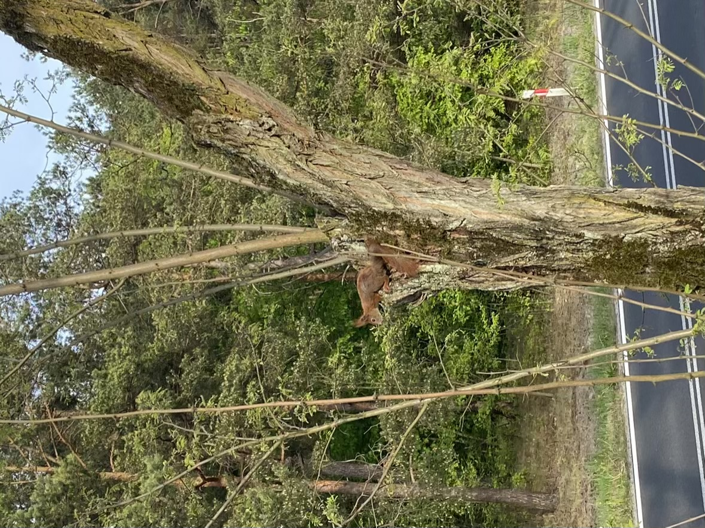

KRONIKI RUDY TARNOWSKIEJ
Ruda Tarnowska to szlacheckie imperium położone przed Łachą. Za dnia cieszy oko pięknymi widokami niesamowitych krajobrazów. Po zmroku zaś trzeba spodziewać się niespodziewanego. Mieszkańcy mają między sobą różne relacje – od kłótni po wspólne imprezy. Mijają dni i mijają lata, a infrastruktura maleńkimi kroczkami dostaje dodatkowe ulepszenia. Dzięki jej modernizacji społeczność może cieszyć się poprawą jakości nawierzchni drogowej czy też budynkiem pożytku publicznego, jakim została świetlica. Ruda Tarnowska to miejsce, gdzie można doświadczyć wielu emocji i chwil zarówno pięknych, jak i tych mniej przyjemnych.
